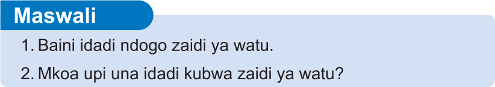
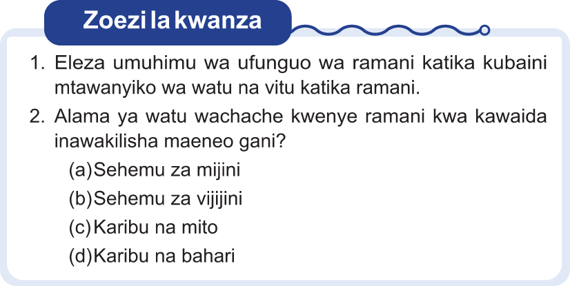

Maswali
1. Baini idadi ndogo zaidi ya watu.
2. Mkoa upi una idadi kubwa zaidi ya watu?
Kazi ya kufanya namba 13: Tumia ‘Google Maps’
1. Tumia simujanja, tableti, au kompyuta kufungua kivinjari chako, kisha andika ‘Google My Maps’;
2. Kwa kutumia kiolesura cha ‘Google My Maps’ bofya sehemu ya kutafuta (yaani ‘search’);
3. Andika jina la wilaya yako kwenye sehemu ya kutafuta, kisha bofya;
4. Baada ya hapo tafuta idadi ya shule za msingi zinazopatikana katika wilaya yako, mfano andika, shule za msingi wilaya ya Chamwino; na
5. Elezea mtawanyiko wa shule za msingi katika wilaya yako.
Zoezi la kwanza
1. Eleza umuhimu wa ufunguo wa ramani katika kubaini mtawanyiko wa watu na vitu katika ramani.
2. Alama ya watu wachache kwenye ramani kwa kawaida inawakilisha maeneo gani?
(a) Sehemu za mijini
(b) Sehemu za vijijini
(c) Karibu na mito
(d) Karibu na bahari